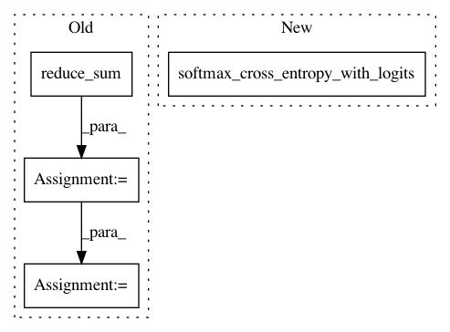

d41aa4d2c995796e3978a83052515572f402fa5f,basic/model.py,Model,_build_loss,#Model#,219
Before Change
losses = tf.nn.sigmoid_cross_entropy_with_logits(
tf.reshape(self.logits2, [-1, M, JX]), tf.cast(self.wy, "float")) // [N, M, JX]
num_pos = tf.reduce_sum(tf.cast(self.wy, "float"))
num_neg = tf.reduce_sum(tf.cast(self.x_mask, "float")) - num_pos
damp_ratio = num_pos / num_neg
dampened_losses = losses * ((tf.cast(self.x_mask, "float") - tf.cast(self.wy, "float")) * damp_ratio + tf.cast(self.wy, "float"))
new_losses = tf.reduce_sum(dampened_losses, [1, 2])
ce_loss = tf.reduce_mean(loss_mask * new_losses)
tf.add_to_collection("losses", ce_loss)
After Change
if config.na:
na = tf.reshape(self.na, [-1, 1])
concat_y = tf.concat(1, [na, tf.reshape(self.wy, [-1, M * JX])])
losses = tf.nn.softmax_cross_entropy_with_logits(self.concat_logits, tf.cast(concat_y, "float"))
else:
losses = tf.nn.softmax_cross_entropy_with_logits(
self.logits2, tf.cast(tf.reshape(self.wy, [-1, M * JX]), "float"))
ce_loss = tf.reduce_mean(loss_mask * losses)
In pattern: SUPERPATTERN
Frequency: 3
Non-data size: 4
Instances
Project Name: wenwei202/iss-rnns
Commit Name: d41aa4d2c995796e3978a83052515572f402fa5f
Time: 2017-01-21
Author: seominjoon@gmail.com
File Name: basic/model.py
Class Name: Model
Method Name: _build_loss
Project Name: brilee/MuGo
Commit Name: 754238ee0338c960ed6f3640f3ef6dd3b3fb7108
Time: 2017-06-23
Author: brian.kihoon.lee@gmail.com
File Name: policy.py
Class Name: PolicyNetwork
Method Name: set_up_network
Project Name: jakeret/tf_unet
Commit Name: 6abab74f85bf850de55fa9e39ece64b8a9eeff58
Time: 2016-12-27
Author: jakeret@phys.ethz.ch
File Name: tf_unet/unet.py
Class Name: Unet
Method Name: __init__